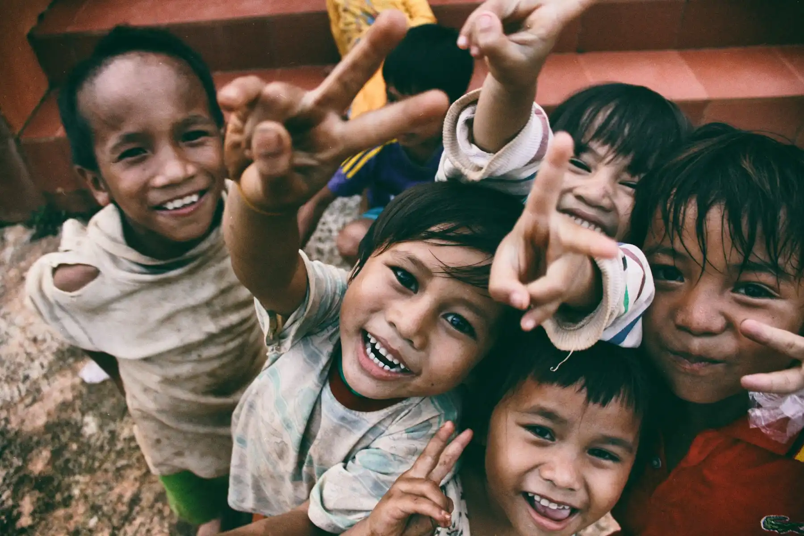
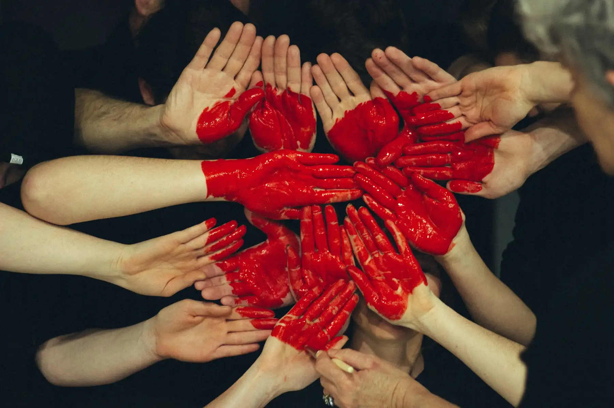
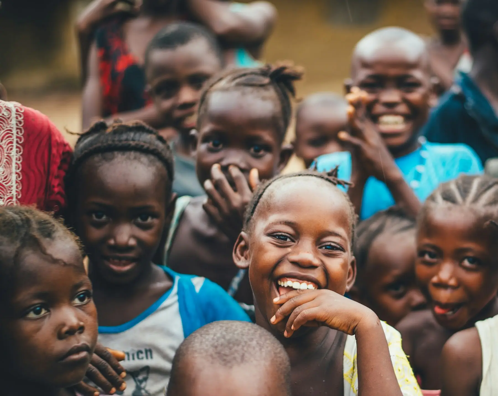

A lake breathes again in Madipakkam
Two hundred volunteers, six weekends, one lake. How a neighbourhood bund became a living classroom.
Read Story
Field notes, volunteer voices, and impact explainers from the Stackly community.

On our tenth anniversary, founder Meera Krishnan looks back at the lake clean-up that became a movement — and forward to the hundred cities ahead.
Read the Anniversary StoryTwo hundred volunteers, six weekends, one lake. How a neighbourhood bund became a living classroom.
Read Story
Planting is the easy part. Our geo-tagging and two-year care rosters push survival past 80%.
Read StoryMeena's village had never sent a girl to college. Her mentors tell the story of the year that changed that.
Read StoryA night-shift nurse, a 5 a.m. kitchen crew, and the quiet logic of giving time you don't have.
Read Story
Hours, outcomes, survival rates — a plain-language guide to what our numbers really mean.
Read Story
Ninety minutes, one mock flood zone, forty certified volunteers. Here's how relief training works.
Read Story
A weekly food drive in Bengaluru slowly turned into a library, a clinic desk, and a job board.
Read Story
Our remote mentorship cohort grew 3x this year. Coordinators share what makes it stick.
Read Story
A coastal clean-up by the numbers — and why segregation on-site matters more than the haul.
Read StoryNo stories match your search yet — try another word or category.
Volunteers who join us write the best chapters. Start yours this weekend.